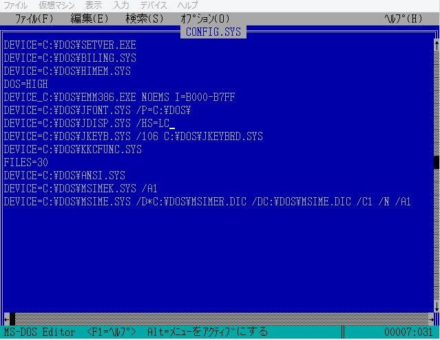
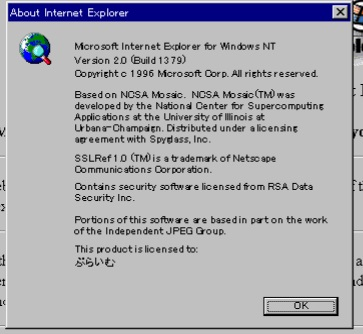
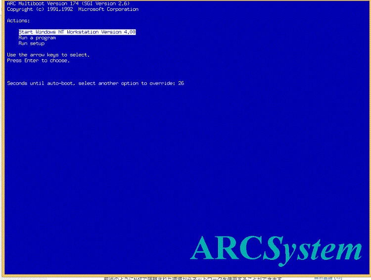
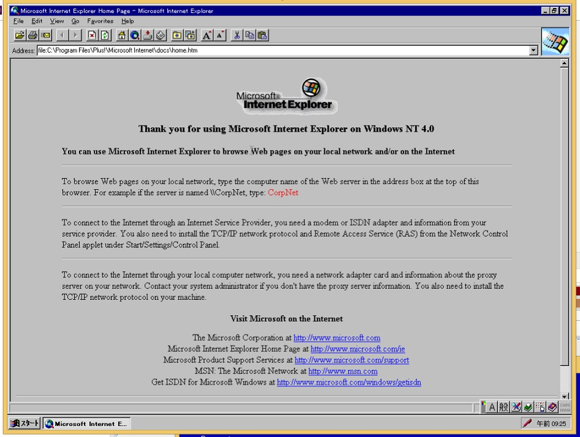
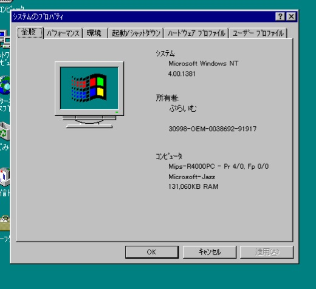

| Dynabook L20でWindows 2000をインストール | そもそも動くの? ... はい |
|---|---|
| 手順 | 注意点 |
| CDからWIndows 2000 をインストール | nlite等でService Pack 4をあらかじめ適用する(無印だと起動にかなり時間がかかるため) |
| ドライバ | LAN,Sound,Graphicのドライバ |
| LAN | dynabook ダウンロードページから型番を検索しrealtek gigabit ethernet family xp用ドライバの自己解凍式プログラムをダウンロードし、 7-zipなどで解凍する、その中に2k用ドライバがあるのでそれをデバイスマネージャからインストール |
| Audio | kb888111を黒翼猫のコンピュータ日記 2nd Edition - Windows 2000 BlogからリンクしてあるWindows Legacy Updateというサイトからダウンロード |
| ＊再起動時にプラグアンドプレイでIntel HD Audioが自動的に認識される。 | kb888111無しでオーディオを認識できない原因 https://www.tekwind.co.jp/ASU/faq/entry_28.php |
| Video | ダウンロード先 http://blog.livedoor.jp/blackwingcat/archives/1143494.html |
| このサイトからリンクされているインテルのサイトからzipをダウンロードしてsetup.exeを実行する | |
| WindowsUpdateまでの手順 | IE6,SP4 SRP v2,ルート証明書の更新の順でインストールする。 IE6以外はWindows legucy Updateというサイトからダウンロード |
| Windwos update | IEのtlsのチェックを外し、ssl2,3にチェックを入れると更新できる |

 最初は画面の指示に従ってインストールを進めます。
MS-DOSのみインストール後にWindowsで作れるDOS起動ディスクから立ち上げ、cドライブでedit c:¥config.sysと入力する。
最初は画面の指示に従ってインストールを進めます。
MS-DOSのみインストール後にWindowsで作れるDOS起動ディスクから立ち上げ、cドライブでedit c:¥config.sysと入力する。そして内容を以下のように書き換える。

後は3.1のファイルをコピーして、そこからセットアップする。(PC-DOSだとWindowsインストール画面に進まない?)途中でtotixyuudeconfigやautoexecを書き換えるか聞かれるが、 configやautoexecに変更は加えない。セットアップが終わったら再起動し、windowsのディレクトリに移動し、winと入力する。

| 参考サイト | |
|---|---|
| http://j7p.net/backup/howto_doscdrom.html | http://himagine.s20.xrea.com/win31br/win31br.htm |
| http://himagine.s20.xrea.com/win31br/win31br.htm | https://legacyos.ichmy.0t0.jp/virtualwin31/ |
| https://www.ipentec.com/document/hyper-v-install-msdos-62 |
Visual Studio 2010 Expressと旧版のダウンロード先まとめ | Wolfish BLOG
-
QEMUでWindows NT 4.0
|  |
|  |
参考サイト
QEMUのMIPSにWindows NTをインストールする方法-Computernewb Wiki
QEMUでNT4/MIPS - 七誌の開発日記
 トップ
トップ